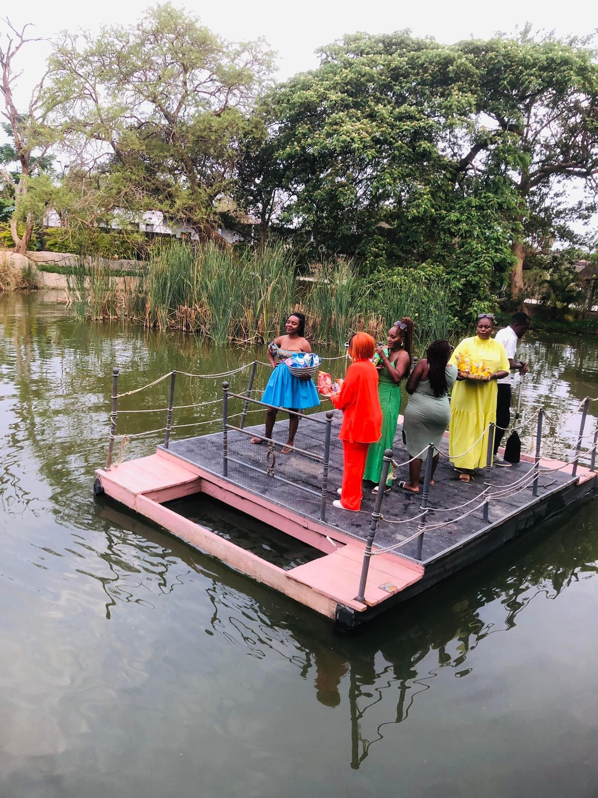

01 / LILAYI 1Pondside days
Floating Bar
& Homely Home
At Lilayi 1, the Floating Bar sits over a large man-made pond, with fishing on both sides and a floating platform inspired by a pontoon. Homely Home is a four-bedroom former family residence with two living rooms, a dining room and kitchen; ask the team about its current rental arrangements. A converted garage bar sits by another pond, near garden seating, a playground, swings, a trampoline and a swimming pool. One-bedroom apartments are also part of the offering; contact the team about current availability.
Ask about Lilayi 1